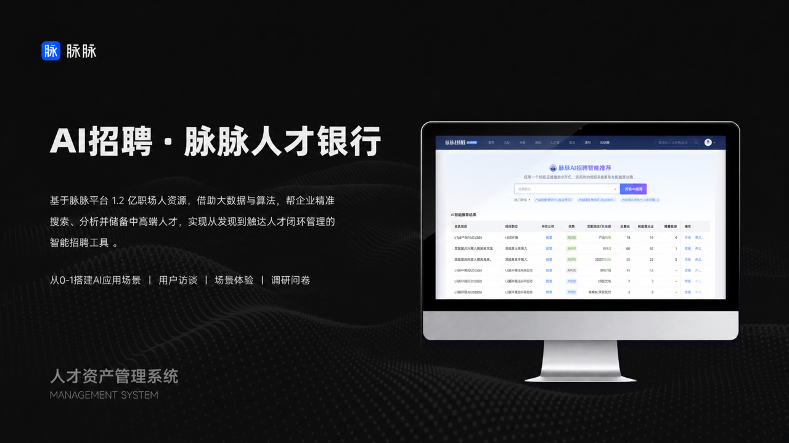

返回作品集
联系我
AI 产品 / B 端招聘系统
AI 招聘 · 脉脉人才银行
面向招聘顾问与企业 HR 的人才搜索、分析和管理场景，重点处理 AI 搜索结果、人才信息结构和触达流程的可理解性。

项目角色
从 0-1 搭建 AI 应用场景，负责用户访谈、场景体验、调研问卷、交互设计与持续优化。
设计重点
让复杂人才数据可搜索、可筛选、可解释，并支持招聘任务继续推进。
下一步
这里可以继续扩展为完整公开版 case study：背景、问题、方案、验证和反思。